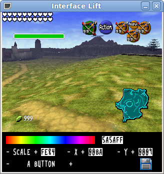
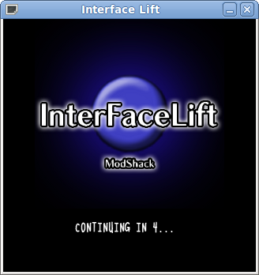
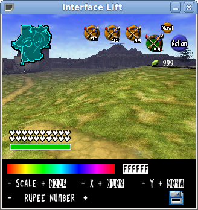
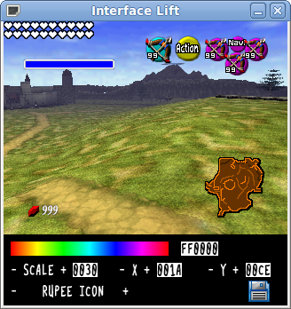
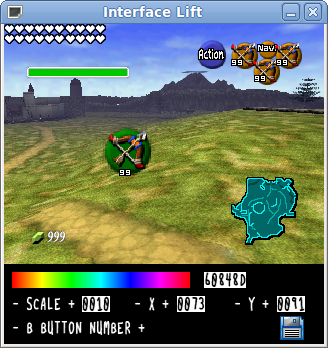
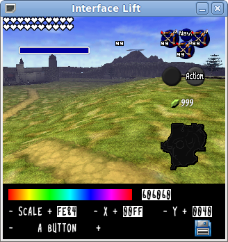
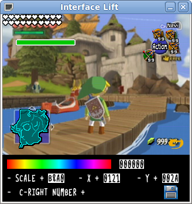

Interface Lift
Release
- Included in your download
- Interface Lift.exe and the DLL file it needs. This is all you need.
Interface Lift is a point-and-click interface creator made for Legend of Zelda: Ocarina of Time. It generates GameShark Codes (for the Debug ROM; they can be converted to other roms, but the debug rom is the most popular) based on which interface components are modified.
People to thank
- Programming
- Flotonic - Interface Lift
- Graphics
- SanguinettiMods - Save button. Exporting graphics from the game.
- Zelda Universe - Default background.
- Flotonic - Font; Graphic implementation.
- Nintendo - All other graphics.
- Documentation
- SanguinettiMods - "Action" scale; a bunch of stuff that will be in the next release if there is one.
- Flotonic - B Button Number.
- Jissan and Sakura - The rest of the documentation.
- Testing
- SanguinettiMods
- Flotonic (not in-game testing)
- Other
- Naxylldritt - His code was used as basecode.txt in one of the images.
- SanguinettiMods - Demonstration video; the name of the program.
- Flotonic - Instructions; images for instructions.
Usage
To launch Interface Lift, double click it.
Selecting/Moving Components
Components can be selected by clicking or by using the - and + signs next to the current component name at the bottom of the menu. You can use + and - on the X and Y Positions, click the X and Y Positions for yourself to enter your own coordinates, or click and drag the object you want to move. Each interface element can be done this way. The left C Button, for example, is made up of three parts: the icon (which can vary ingame, but is shown in the editor as the Fairy Bow), the amount of ammunition you have for the item, and the button itself. In order to move this button, you must move all three parts. Because all three parts of the button can be moved, more customization is available to you.
Color Editing
If you would like to edit the color of the hearts, the A Button, the Rupee Icon, or anything else, the first thing you need to do is click it. Now you can click the color select tool in order to select a color, or the box next to it if you would like to enter your own color value.
Rescaling Objects
The game does not feature a scale for every object, but it does for many of them. The buttons themselves can be rescaled as well as the icons that fall over them. Click the item you want to change the scale of. You can click - or + next to "Scale" on the menu in order to increase or decrease the size of the object. The box to the right of it can be clicked in order to enter y our own scale.
Generating the GameShark Code
Click the Save icon on the menu. A file named code.txt will be made in the same directory as the program. This will contain your code.Saving Progress/Editing an Existing Code
If you would like to take a break and get back to making your interface later but do not want to lose your progress, click the Save button. This will put a file named code.txt in the same directory as the program. Rename this to basecode.txt or copy it into your own basecode.txt file that you create. The next time you launch the program, it will say that it found a file name basecode.txt and ask if you want to use it as a base. Click "Yes." In order to edit an existing code, you can simply copy it into basecode.txt and the program can edit that.
Code by Naxylldritt. Here is his original screenshot.
Custom Background
If you think it would be cool to replicate the interface of another game, using a custom background is very helpful and extremely simple. Take or find a screenshot of the game whose interface you want to replicate (with the interface visible). Rescale it to 320x240. Save as bg.bmp in the same directory as the program. When you run the program, you will be asked if you want to use this as the background instead of the default image. Click "Yes."